나폴레옹은 대체 왜 살이 찐 것일까 ? - 고탄저지의 비극
게시: 2018-08-30T06:30:00+09:00
저는 여러번 밝혔다시피 비만인 편입니다. 젊었을 때는 괜찮다가, 나중에 나이가 들어가면서 점점 늘어나는 체중으로 좌절과 굴욕을 맛본 사람이 저 하나 뿐만은 아닐 겁니다. 그리고 우리들의 일그러진 영웅 나폴레옹도 그 중 한명이었습니다.
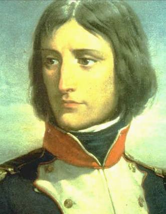
(포병 소위 시절의 나폴레옹... 누군지 알아보시겠습니까 ?)
그의 많은 초상화에서 보듯이, 젊은 시절 나폴레옹은 상당히 마른 편이었습니다. 그를 당시 직접 본 많은 사람들이 남긴 기록에도 '야위었다, 마치 아픈 사람같은 안색이었다'라는 표현이 많습니다. 그는 제1통령 시절, 튈르리 궁에서 지낼 때부터 겨울철에는 벽난로의 불을 크게 피우는 것을 좋아했습니다. 마른 사람들이 흔히 그러하듯, 그도 추위에 무척 약했기 때문입니다.
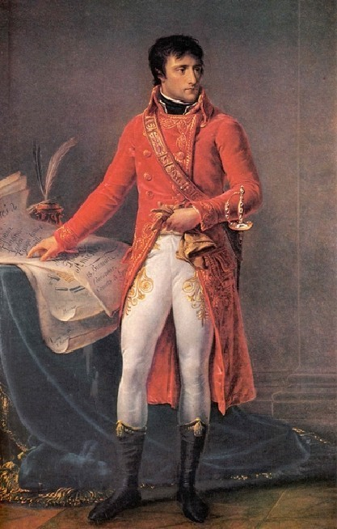
(제1통령 시절 날씬했던 나폴레옹의 모습)
나폴레옹은 젊은 시절, 자신이 나중에 살찐 반대머리 중년남이 되리라고는 상상도 못했었나 봅니다. 그는 제1통령 시절 그의 소년 사관 학교 시절 친구이자, 비서였던 부리엔에게 자신의 비쩍 마른 몸에 대해 이야기하면서, '난 40대가 돼도 뚱보 먹보가 될 것 같지는 않다'고 이야기했다고 합니다.
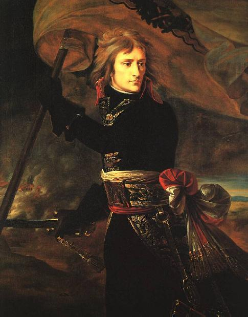
(이탈리아 원정 때의 나폴레옹은 무척 가냘픈 모습이었습니다... 물론 이 그림처럼 멋있지는 않았겠지요.)
나폴레옹이 살이 찌기 시작한 것은 1806년 경부터라고 합니다. 이때라면 나폴레옹이 예나-아우어슈타트 전투에서 프러시아를 무찌르고 폴란드 바르샤바에 입성할 때였지요. 나폴레옹이 살이 찌기 시작한 것과의 관계가 우연인지 필연인지 몰라도, 이때 즈음 나폴레옹은 일평생 가장 사랑했다고 할만 한 여인, 즉 폴란드의 마리 발레프스카 백작 부인을 만나게 되지요. 나폴레옹은 그 이전부터 방탕한 여자 관계로 유명했으니, 꼭 이 새로운 여자로 인해 생활이 달라졌다고 볼 수는 없겠습니다만, 사랑이라는 그 심리 상태가 나폴레옹의 생활에 어떤 영향을 끼쳤는지는 잘 모르겠습니다.
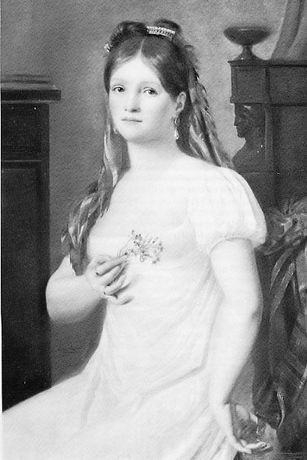
(나폴레옹이 엘바 섬에 유배되었을 때, 유일하게 찾아온 여자들은 그의 어머니와 발레프스카 뿐이었습니다.)
나폴레옹의 식생활이 그를 살찌게 했을까요 ? 나폴레옹과 저는 생활 습관에도 공통점이 2가지 있습니다. 그 중 하나는 바로 '빨리 먹는다'는 점입니다. 그는 프랑스인답지 않게, 식사를 무척 빨리 하는 편이었습니다. 당시 중산층의 식사는 와인과 함께 식사를 즐기며 주변 사람들과 이런저런 담소를 나누는 것이 보통이었으므로, 보통 1시간 가까이 걸리기 마련이었으나, 나폴레옹은 '밥먹으면서 떠들면 안된다'는 한국식 가정 교육을 받았는지, 대개 15분 정도면 한 대접 뚝딱 해치우고 식탁에서 일어났다고 합니다. 심지어는 포로로서 유형지 세인트 헬레나 섬으로 끌려가는 영국 군함 노섬버랜드(HMS Northumberland)호에서도 이 습관을 그대로 고집했습니다. 상대가 프랑스의 황제이니만큼, 당연히 그 영국 군함 함장은 그를 식탁에 초대했고, 영국 해군의 전통에 따르면 그 자리에서는 함장이 식사를 마치기 전에는 그 누구도 자리에서 일어날 수 없었으나, 나폴레옹은 아무 말 없이 후다닥 음식을 집어먹고는 '이만 실례'하면서 벌떡 일어나 나가는 바람에, 동석했던 영국 해군 장교들이 모두 아연실색했다고 합니다.
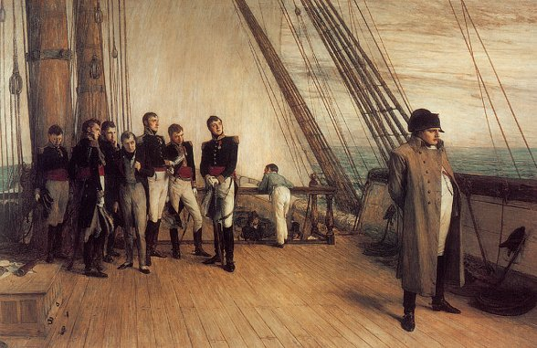
(벨레로폰 선상에서의 나폴레옹. 원래 나폴레옹은 HMS Bellerophon에게 항복했으나, 나폴레옹이 낡은 벨레로폰 호의 상태에 심각한 불만을 표시했기 때문에 희대의 거물을 세인트 헬레나 섬으로 모실 영광을 노섬버랜드 호에게 양보해야 했습니다.)
그래서인지, 당시 노섬버랜드 호의 함장이었던 로스(Ross)가 남긴 기록에는, 나폴레옹의 외양에 대해 매우 안 좋게 묘사가 되어 있습니다.
"그는 뚱뚱한 편으로서, 보통 우리가 배불뚝이(pot-bellied)라고 부르는 몸매였다. 다리의 모양새는 좋았으나 걸음걸이는 왠지 서툴렀고, 뒤뚱거리는 것과 일부러 뽐내며 걷는 것 중간 정도로, 뭔가 이상해보였다. 하지만 그건 그가 파도에 출렁이는 배의 움직임에 익숙해지지 않아서였을 수도 있다."
하지만 나폴레옹은 빨리 먹는다는 점을 빼고는, 살이 찔만한 식생활을 하지는 않았습니다. 나폴레옹은 위가 그리 좋지 않아서 과식을 좋아하지 않아서, 음식을 많이 차리지 말라고 요리사에게 주문하기도 했고, 1813년 제국의 붕괴를 막기 위해 독일 원정을 떠날 때는 '아무리 황제라도 전쟁터에까지 요리사가 너무 많이 따라다닌다'며 요리사의 수를 대폭 줄이라고 명령을 내리기도 했습니다.
이렇게 적어놓으니, 마치 나폴레옹은 그 이전까지는 전쟁터에도 수많은 요리사를 데리고 다니며 산해진미를 즐긴 것 처럼 보입니다. 가령 치킨 마렝고(Chicken Marengo)라는, 나폴레옹과 관련된 전설과도 같은 요리가 있습니다. 1800년, 나폴레옹은 북부 이탈리아의 <마렝고>에서 오스트리아의 대군과 맞붙어 처음에는 거의 패전하는 듯하다가, 지원군의 도움으로 극적인 역전승을 거둡니다. 짜릿한 승리를 거둔 뒤 나폴레옹은 몹시 허기가 져서 개인 요리사인 뒤낭(Dunand)에게 식사 준비를 시킵니다.
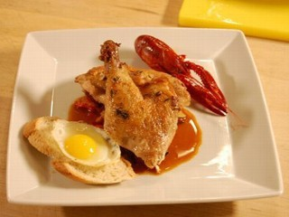
(구글을 뒤져보면 이것이 치킨 마렝고라고 주장하는 사진들이 잔뜩 있는데, 그래도 이 사진이 원래의 치킨 마렝고를 묘사하는 가장 적절한 사진 같습니다. 저도 뭐 먹어봤어야 어느 것이 진짜인지 구분할텐데... 아무튼 건빵 대신 바게트 빵을, 그리고 가재와 달걀이 있긴 하네요. 가재의 존재 여부가 가장 중요한 것 같습니다.)
그러나 늘 그렇듯이, 나폴레옹의 보급마차는 제 시간에 전장에 도착하지 못했기 때문에, 뒤낭은 아무 준비도 없이 근처에서 허겁지겁 긁어모은 재료, 즉 닭과 토마토, 계란, 가재, 올리브 기름, 그리고 병사들의 건빵 만으로 요리를 만들어야 했는데, 이것이 바로 유명한 <치킨 마렝고>라는 것입니다.
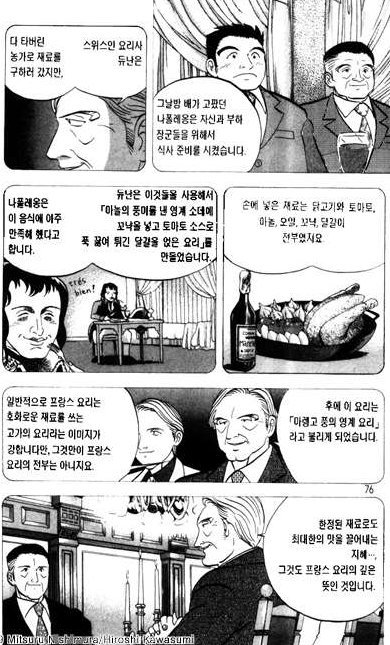
(일본 만화책 '대사 각하의 요리사'입니다. 매우 재미있게 읽었습니다. 그나저나, 닭고기와 토마토, 마늘, 오일, 달걀, 꼬냑 정도면 굉장히 호사스러운 재료 아닌가요 ? 최소한 우리집에서는 그렇습니다.)
하지만 많은 사람들이 이 이야기의 허구성에 대해 지적합니다. 뒤낭은 마렝고 전투가 벌어진지 5년 뒤인 1805년에야 나폴레옹의 요리사가 되었다는 것부터, 프랑스에 치킨 마렝고라는 요리가 정말 등장한 것은 1820년대부터라는 이야기도 있습니다. 또 이탈리아 북부의 전쟁터에서는 6월 중순에 토마토를 구할 방법이 없었을 것이라는 이야기도 있습니다. 아무래도 치킨 마렝고의 전설은 어디까지나 전설에 불과했던 모양입니다.
사실 나폴레옹 전술의 기본은 '미칠 듯한 기동력'이었기 때문에, 황제 자신조차도 따로 식량을 챙겨가지 못하는 경우가 많았습니다. 나폴레옹의 저녁 식사가 그의 마멜룩 시종인 루스탐이 병사들에게 얻어온 고기 한조각에 감자 몇 개인 경우가 드문 일이 아니었습니다.
나폴레옹의 식사에서, 유일하게 사치품인데다 그다지 건강에 이롭지 못한 것은 딱 하나, 포도주였습니다. 나폴레옹은 원래 먹는 걸 그다지 즐기는 편이 아니었습니다만, 좋은 포도주만은 상당히 즐기는 편이었습니다. 특히 샹베르탱 포도주를 즐겨했으므로, 1812년 러시아 침공시에도 상당량을 가져갔다고 합니다. 그렇지만 레드 와인이 꼭 살이 찌는 음료라고 하기는 좀 그렇습니다. 나폴레옹이 취할 정도로 많이 마시는 편도 아니었고, 적당량의 와인은 오히려 건강에 좋다고들 하지 않습니까 ?
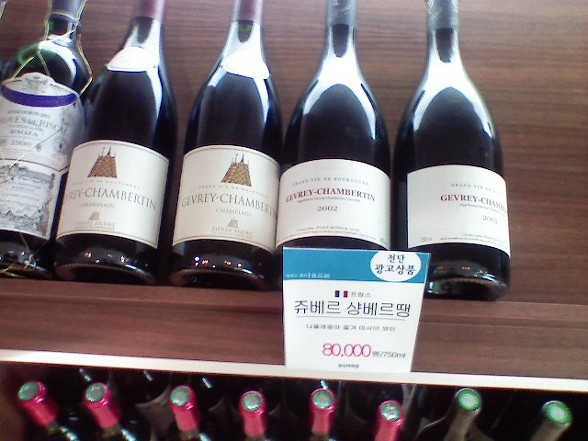
(나폴레옹이 가장 좋아하던 포도주라는 광고는 없네요... 출처는 http://darkone.egloos.com/820578 )
그렇다면 대체 왜 나폴레옹은 살이 찐 것일까요 ? 그에 대해서는 나폴레옹 자신이 원인 분석을 한 것이 있습니다. 즉, 나폴레옹은 뭔가 안좋은 일로 외국 대사와 만나 그를 질책하면서, '나는 최근 몇 년 간을 전장을 누비느라 쉬지 못해 살이 쪘다'라고 말한 적이 있습니다.
'쉬질 못해서 살이 쪘다 ?' 무척 기묘한 논리이긴 합니다만, 전혀 말이 안되는 것도 아닙니다. 이건 나폴레옹의 운동 습관과 상관이 있기 때문입니다.
나폴레옹은 운동을 그렇게 많이 하는 스타일은 아니었습니다. 워낙 당대의 인물인지라, 그의 생전에, 그리고 그의 사후에, 나폴레옹에 대한 수많은 회고록과 비망목이 쏟아져 나왔습니다만, 그가 펜싱을 즐겨했다던가, 매일 구보나 윗몸 일으키기, 팔굽혀펴기를 했다는 기록은 없습니다. 딱 하나, 나폴레옹이 즐겼던 운동은 승마와 사냥이었습니다. 말을 타고 달리는 것이 얼마나 (말에게 말고 사람에게) 운동이 되는지는 잘 모르겠습니다만, 저처럼 운동을 전혀 안하는 것보다야 확실히 몸에 좋았을 것 같기는 합니다.
그런데, 정작 전쟁터에서는 자유로운 승마를 즐길 기회가 별로 없고, 나폴레옹은 전쟁터로 이동할 때 말보다는 마차를 이용하는 경우가 많았습니다. 그렇게 정상적인 운동을 못했기 때문에 살이 쪘다고 생각할 수도 있겠지요. 하지만 저는 아무리 생각해봐도, 전쟁터를 너무 쏘다니느라고 살이 쪘다는 것은 이해가 되지 않습니다. 전쟁터를 누비느라 살이 쪘다면, 더 젊었던 시절부터 그랬어야지요. 노새를 타고 알프스를 넘고, 낙타를 타고 이집트 사막을 누빌 때는 날씬했쟎습니까 ?
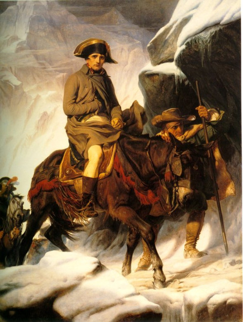
(유명한 다비드의 그림과는 달리, 나폴레옹은 실제로는 안정적인 발걸음의 노새를 타고 알프스를 넘었습니다.)
최근에 http://www.foodtimeline.org/foodcolonial.html 라는 웹사이트를 읽었는데, 이 웹사이트에서 인용한 크리스티앙 기(Christian Guy)라는 분의 'An Illustrated History of French Cuisine From Charlemagne to Charles de Gaulle'라는 책의 인용문을 보니 여기에 나폴레옹이 왜 살이 쪘는가에 대한 실마리가 있는 것 같습니다. 이 책에 따르면 나폴레옹은 전형적인 고탄수화물 위주의 식사를 했습니다 ! 그는 감자, 콩, 렌틸콩 등 든든한 곡물류를 좋아했는데, 특히 이탈리아식 파스타를 매우 좋아해서 하루에 최소 한 번씩은 한 접시씩을 싹 비웠다고 합니다. 그의 집사였던 콩스탕(Constant)에 따르면 그가 좋아하는 고기 요리는 부댕 알라 리셜리외(Boudin a la Richelieu, 리셜리외 식 소시지, 돼지피와 지방으로 만든 소시지에 계피를 넣은 구운 사과를 곁들인 요리), 크넬(quenelle, 크림을 넣은 미트볼 요리) 등이었다고 합니다. 또 다른 시종의 기록에도, 나폴레옹은 삶은 쇠고기나 양고기를 한 조각 먹는 정도로서, 결코 고기를 많이 먹는 편은 아니었답니다. 요즘 전형적인 한국식 식단인 고탄수화물 저지방 식단(이하 고탄저지)이 비만과 성인병을 일으킨다는 주장이 페이스북을 뒤덮던데, 나폴레옹도 정말 그런 고탄저지 식단의 희생양이었는지도 모르겠습니다. 나폴레옹은 특히 전쟁터를 많이 돌아다녔고, 그럴 때마다 제대로 된 식사를 하지 못하고 병사들이 마른 빵을 넣고 끓인 수프나 모닥불로 구운 감자 같은 것을 얻어 먹는 경우가 많았습니다. 모두 전형적인 고탄저지 식단입니다.
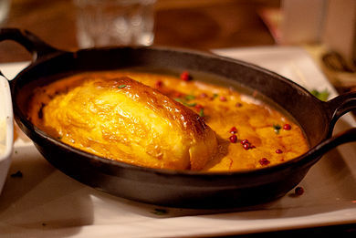
(나폴레옹이 좋아했다는 quenelle이라는 것은 다진 생선이나 고기를 계란 같은 모양의 덩어리로 뭉치고 크림을 넣어 요리한 일종의 미트볼 요리입니다.)
저는 이 글을 읽고 정말 그럴지도 모르겠다는 생각을 했습니다. 위에서 나폴레옹과 저의 공통적인 식습관이 빨리 먹는다는 점 외에 한 가지 더 있다고 했는데, 탄수화물을 좋아한다는 점이 바로 두번째 공통점이거든요. 저도 빵이나 국수 등 특히 밀가루로 만든 음식을 매우, 매~우 좋아합니다. 저도 정말 고탄저지 식단의 희생양인 모양입니다.
나폴레옹은 세인트 헬레나 섬에 유배된 이래로 더욱 살이 쪘습니다. 영국은 나폴레옹에 대해 무척 안좋은 대접을 했기 때문에, 그의 삶은 무더위와 지루함에 빈곤까지 겹쳐 '비참'을 간신히 면한 정도였습니다. 좋아하던 승마도 당연히 못했으니, 더욱 살이 쪘겠지요.
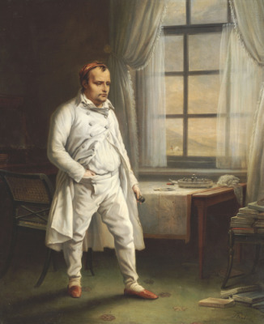
(세인트 헬레나 섬에서의 나폴레옹... 이렇게 초라한 뚱보 아저씨가 된 나폴레옹을 보고 영국인들은 속으로 무척이나 웃었겠지요.)
나폴레옹은 위암으로 인해 사망했다는 것이 정설입니다. 그의 아버지와 두 여동생이 모두 위암으로 죽었고, 또 그의 사후 부검을 했던 영국인 의사들이 모두 위암이 사망 원인이라고 증언했기 때문입니다. 그러나 그의 죽음에 대해서는 독살설이 끈질기게 나돌았습니다. 이렇게 나폴레옹 독살설이 나돌게 된 원인 중의 하나가 바로 그의 비만입니다. 위암이라면 제대로 먹지를 못해 살이 빠지기 마련입니다만, 나폴레옹은 죽을 때까지도 계속 뚱뚱했기 때문에, 위암일리가 없다는 것입니다. 하지만 실제로 나폴레옹은 사망 몇 주 전부터 급격히 체중이 줄었다고 합니다. 결국 위암이 그의 사망 원인이라는 것은 여전히 정설로 남아 있습니다.
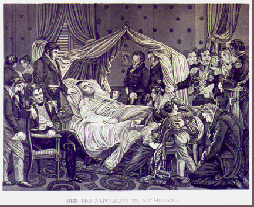
(이건 사진이 아닌 관계로, 얼마나 사실적일지는 의문입니다만, 확실히 얼굴은 좀 말라 보이는군요.)
나폴레옹의 시대에 비만은 요즘처럼 죄악시되는 꼴불견이었을까요 ? 요즘처럼까지야 아니었지만, 흔히 생각하는 것처럼 부와 권력의 상징까지는 아니었습니다. 여자들의 미의 기준으로 요즘처럼 비쩍 마른 스타일이 '먹혔지'는 않았지만, 남자의 경우는, 고대 그리스때부터 줄곧, 근육질의 건강한 몸매가 당연히 인기가 좋았지요. 당시 경기병들의 복장이, 몸에 쫙 달라붙는 야시시한 쫄바지였다는 것만 봐도 그렇쟎습니까 ? 스판덱스 소재의 신축성있는 바지가 없던 시절에, 기병 장교들은 정말 꽉 끼는 바지를 입기 위해 다리에 그리스를 바르기도 할 정도로, 근육질의 늘씬한 몸매를 자랑하기에 애를 썼습니다. 또 나폴레옹도 자신의 몸이, 의지와는 달리 볼품없이 살이 찌는 것에 대해 꽤 당혹해했다고 합니다.
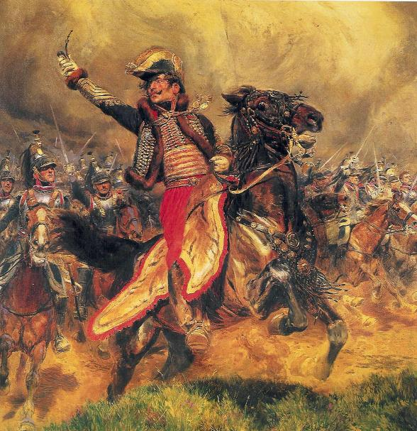
(간지 폭풍 경기병들에게 돼지 따위는 필요없다 !! 그림 속의 기병이 칼 대신 담배 파이프를 들고 돌격하는 것을 보니 저건 광기병 라살(Lasalle 장군입니다.)
아래는 나폴레옹 전쟁을 배경으로 한 소설들에서, 비만에 관련된 부분들을 발췌 번역한 것입니다. 재미로 읽어보세요.
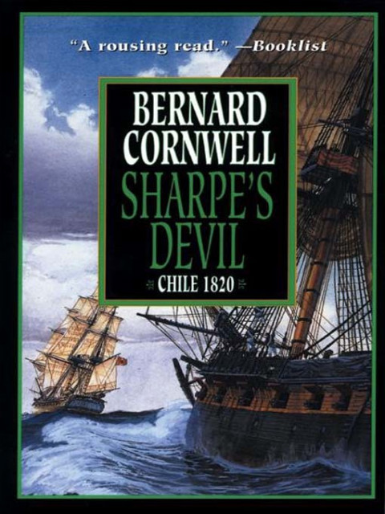
Sharpe's Devil by Bernard Cornwell (배경 : 1820년 세인트 헬레나 섬) --------
하퍼는 그의 넓은 모자챙으로 얼굴에 부채질을 했다. "망할 놈의 노새를 좀 데려와주면 좋겠네요. 이 빌어먹을 더위 때문에 죽겠어요. 정말이요. 저 고지 위에 올라가면 좀 시원하겠지요."
"자네가 그렇게 뚱뚱하지만 않았다면 그냥 걸어가면 되었을 거야." 샤프는 부드럽게 말했다.
"뚱뚱하다고요 ! 난 그냥 몸이 좋은 거에요 !" 이 즉각적이고도 분노에 가득찬 반응은 아주 오래전부터 해오던 것이라서, 제3자가 듣고 있었다면 아마 이것이 이 두 사람 사이에 오랫동안 되풀이되온 실랑이라는 것을 즉시 알아차릴 수 있었을 것이었다.
"몸이 좋은 거가 뭐 잘못된 거 아니쟎아요 ?" 하퍼는 말을 계속했다. "이런 빌어먹을(Mother of Christ), 누가 아주 잘먹고 잘산다고 해서 그 사람이 건강하다는 증표에 대해 뭐라고 궁시렁거릴 필요는 없쟎아요 ! 중령님 자신을 보라구요 ! 아마 성령께서도 중령님보다는 뼈에 붙은 살이 좀더 많을 걸요. 내가 중령님을 삶으면 라드(제과용 동물성 지방)를 1파운드도 못 건질 것 같네요. 중령님도 저처럼 먹어야 한다구요 !" 패트릭 하퍼는 자랑스럽게 자기 가슴을 쿵 내리쳤는데, 이로 인해 그의 배까지 마치 지진같은 울렁임이 물결쳤다.
"먹는 것 문제가 아니야." 샤프가 말했다. "맥주라구."
"스타우트(독한 흑맥주:역주)는 살 안쪄요 !" 패트릭 하퍼는 정말로 마음의 상처를 입었다. 그는 나폴레옹 전쟁 내내 샤프의 휘하의 하사관이었고, 그때나 지금이나 샤프는 자기 옆에서 싸워줄 전우로 그 이외에 다른 누구도 두고 싶지 않을 정도였다. 하지만 전쟁이 끝난 뒤 몇년 동안, 이 아일랜드 출신의 하사관은 더블린에서 양조장을 운영했다.
"게다가 맥주집 주인은 자기집 맥주를 마시는 걸 사람들에게 보여줘야 하거든요." 하퍼는 변명하듯이 말했다. "그래야 사람들이 그 주인이 파는 물건 품질을 신뢰한다고요. 정말이에요. 게다가, 이사벨라(하퍼의 스페인 출신 와이프:역주)는 내가 살이 좀 붙는 걸 좋아해요. 내가 건강하다는 증거라나요."
"그렇다면 자네는 더블린에서 가장 건강한 놈팽이일거야." 샤프는 악의없이 말했다.
-------------------------------------------------------------------------
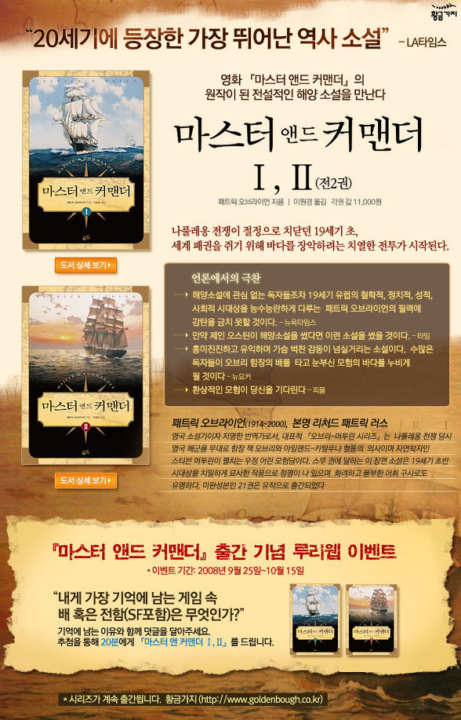
Master & Commander by Patrick O'Brian (배경 1803년, 영국 군함 HMS Sophie) ------
(함장 잭이 장교들을 불러모아 놓고 기습 상륙 작전의 계획을 의논합니다.)
"만(灣)에서 탑까지 달려가는데 10분 정도 걸린다고 치고, 그리고..."
"20분 정도로 계획하지요." 스티븐이 끼어들었다. "여러분처럼 혈색좋은 뚱뚱한(portly) 사람들은 더운 날씨에 무리하게 달리면 일사병이나 울혈로 급사하는 경우가 종종 있거든요."
"제발, 제발 부탁인데 의사 선생, 그런 말씀은 안하셨으면 좋겠소이다." 잭이 낮은 목소리로 말했다. 장교들은 모두 꾸짖는 듯한 눈빛으로 스티븐을 쏘아 보았다. 잭이 한마디 덧붙였다. "그리고, 난 결코 뚱뚱하지 않소."
----------------------------------------------------------------------
예나 지금이나, 남자들은 자신이 뚱뚱하다는 사실을 전면 부정하는군요.